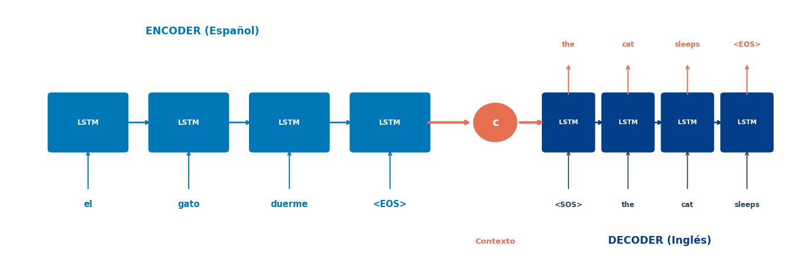
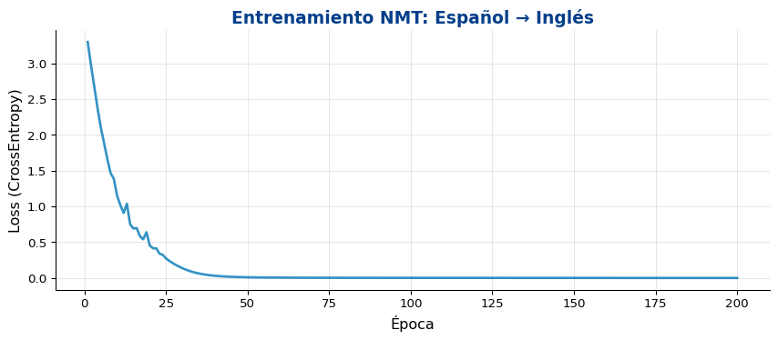
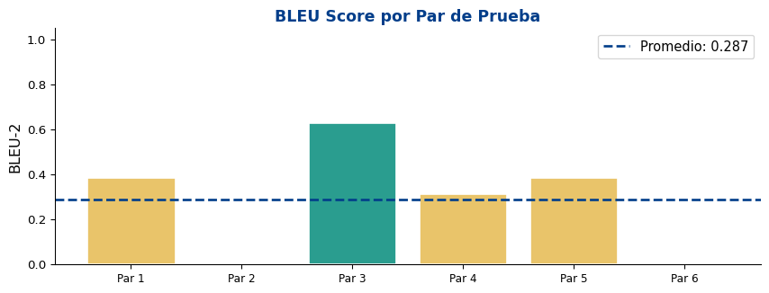
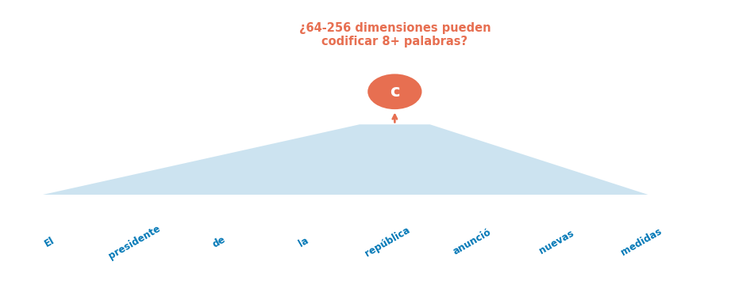

📝 Preprocesamiento para NMT: tokenización y vocabularios
🔬 Experimento: un traductor Español → Inglés
📏 Evaluación: BLEU score
⚡ Trucos prácticos de los sistemas NMT reales
Objetivo
Aplicar la arquitectura Seq2Seq para construir un sistema de traducción automática neuronal, entender su pipeline completo y aprender a evaluar con BLEU.
En 2016, Google reemplazó su sistema estadístico por Google Neural Machine Translation (GNMT) — un sistema Seq2Seq con atención de 8 capas. La calidad mejoró más en un solo salto que en los 10 años previos.
SMT vs. NMT
Statistical MT (SMT)
Pipeline complejo: alineación → modelo de traducción → modelo de lenguaje → decodificación
Componentes entrenados por separado
Traduce frase por frase (phrase-based)
Requiere ingeniería de features manual
Difícil capturar dependencias largas
Neural MT (NMT)
Modelo end-to-end con un solo objetivo
Entrenamiento conjunto de todos los parámetros
Contexto de la oración completa
Representaciones aprendidas automáticamente
Mejor con dependencias a distancia
¿Por qué ganó NMT?
NMT produce traducciones más fluidas y coherentes porque modela la oración completa como un todo, no como fragmentos pegados.
NMT como Aplicación de Seq2Seq 🧠
Arquitectura NMT Básica

Componentes clave
Vocabulario fuente\(V_{\text{src}}\) (español)
Vocabulario objetivo\(V_{\text{tgt}}\) (inglés)
Embeddings separados por idioma
Encoder sobre idioma fuente
Decoder sobre idioma objetivo
Truco de Sutskever (2014)
Invertir la secuencia de entrada mejora significativamente la traducción. ¿Por qué? Las primeras palabras del decoder están más cerca del inicio de la secuencia fuente invertida.
¿Qué necesitamos para entrenar un NMT?
Componente
Descripción
Ejemplo
Corpus paralelo
Pares de oraciones alineadas
“el gato duerme” ↔︎ “the cat sleeps”
Tokenizador fuente
Segmentar texto en idioma fuente
["el", "gato", "duerme"]
Tokenizador objetivo
Segmentar texto en idioma objetivo
["the", "cat", "sleeps"]
Vocabulario fuente
Mapeo token → índice (español)
{"el": 5, "gato": 12, ...}
Vocabulario objetivo
Mapeo token → índice (inglés)
{"the": 5, "cat": 8, ...}
Tokens especiales
<PAD>, <SOS>, <EOS>, <UNK>
Señales de control
Desafío: vocabulario abierto
En la vida real, aparecen palabras nunca vistas (<UNK>). Soluciones: tokenización por subpalabras (BPE, WordPiece, SentencePiece) → la veremos en detalle con Transformers.
Preprocesamiento para NMT 📝
Construyendo el Pipeline de Datos
Code
import torchimport torch.nn as nnimport randomimport re# --- Corpus paralelo español → inglés (simplificado) ---raw_pairs = [ ("el gato duerme", "the cat sleeps"), ("el perro corre", "the dog runs"), ("el pájaro vuela", "the bird flies"), ("el gato come", "the cat eats"), ("el perro duerme", "the dog sleeps"), ("un gato grande corre", "a big cat runs"), ("un perro pequeño duerme", "a small dog sleeps"), ("el pájaro pequeño canta", "the small bird sings"), ("un gato pequeño come", "a small cat eats"), ("el perro grande corre rápido", "the big dog runs fast"), ("el gato negro duerme mucho", "the black cat sleeps a lot"), ("un pájaro bonito vuela alto", "a beautiful bird flies high"), ("el perro blanco come mucho", "the white dog eats a lot"), ("un gato negro corre rápido", "a black cat runs fast"), ("el pájaro grande vuela lejos", "the big bird flies far"), ("un perro bonito duerme aquí", "a beautiful dog sleeps here"), ("el gato blanco come pescado", "the white cat eats fish"), ("un pájaro negro canta fuerte", "a black bird sings loud"), ("el perro negro corre lejos", "the black dog runs far"), ("un gato bonito duerme mucho", "a beautiful cat sleeps a lot"), ("el gato duerme aquí", "the cat sleeps here"), ("un perro come pescado", "a dog eats fish"), ("el pájaro canta fuerte", "the bird sings loud"), ("un gato corre rápido", "a cat runs fast"), ("el perro grande duerme mucho", "the big dog sleeps a lot"), ("un pájaro blanco vuela alto", "a white bird flies high"), ("el gato grande come mucho", "the big cat eats a lot"), ("un perro negro duerme aquí", "a black dog sleeps here"), ("el pájaro bonito canta fuerte", "the beautiful bird sings loud"), ("un gato blanco corre lejos", "a white cat runs far"),]print(f"Total pares: {len(raw_pairs)}")print(f"Ejemplo: '{raw_pairs[0][0]}' → '{raw_pairs[0][1]}'")
Total pares: 30
Ejemplo: 'el gato duerme' → 'the cat sleeps'
Vocabularios y Codificación
Code
# Tokens especialesPAD, SOS, EOS, UNK =0, 1, 2, 3SPECIAL_TOKENS = {"<PAD>": PAD, "<SOS>": SOS, "<EOS>": EOS, "<UNK>": UNK}class Vocabulary:def__init__(self):self.token2idx =dict(SPECIAL_TOKENS)self.idx2token = {v: k for k, v in SPECIAL_TOKENS.items()}self.n_tokens =len(SPECIAL_TOKENS)def add_sentence(self, sentence):for token in sentence.lower().split():if token notinself.token2idx:self.token2idx[token] =self.n_tokensself.idx2token[self.n_tokens] = tokenself.n_tokens +=1def encode(self, sentence, add_eos=True): indices = [self.token2idx.get(t, UNK) for t in sentence.lower().split()]if add_eos: indices.append(EOS)return indicesdef decode(self, indices):return" ".join(self.idx2token.get(i, "<UNK>") for i in indices if i notin (PAD, SOS, EOS))# Construir vocabularios separadossrc_vocab = Vocabulary()tgt_vocab = Vocabulary()for src, tgt in raw_pairs: src_vocab.add_sentence(src) tgt_vocab.add_sentence(tgt)print(f"Vocabulario español: {src_vocab.n_tokens} tokens")print(f"Vocabulario inglés: {tgt_vocab.n_tokens} tokens")print(f"\nEspañol: {list(src_vocab.token2idx.items())[:10]}...")print(f"Inglés: {list(tgt_vocab.token2idx.items())[:10]}...")
optimizer = optim.Adam(model.parameters(), lr=0.005)criterion = nn.CrossEntropyLoss(ignore_index=PAD)# Aumentar datos repitiendo el corpus (simular más datos)N_EPOCHS =200losses = []torch.manual_seed(42)random.seed(42)for epoch inrange(N_EPOCHS): model.train()# Teacher forcing decrece con el tiempo (scheduled sampling) tf_ratio =max(0.1, 1.0- epoch / N_EPOCHS) output = model(train_src, train_tgt.size(1), train_tgt, teacher_forcing_ratio=tf_ratio) loss = criterion(output.reshape(-1, tgt_vocab.n_tokens), train_tgt.reshape(-1)) optimizer.zero_grad() loss.backward() torch.nn.utils.clip_grad_norm_(model.parameters(), 1.0) optimizer.step() losses.append(loss.item())if (epoch +1) %50==0:print(f"Época {epoch+1:3d}/{N_EPOCHS} | Loss: {loss.item():.4f} | TF ratio: {tf_ratio:.2f}")
Época 50/200 | Loss: 0.0105 | TF ratio: 0.76
Época 100/200 | Loss: 0.0022 | TF ratio: 0.51
Época 150/200 | Loss: 0.0013 | TF ratio: 0.26
Época 200/200 | Loss: 0.0009 | TF ratio: 0.10
Curva de Aprendizaje

Probando el Traductor
Code
def translate(model, sentence, src_vocab, tgt_vocab, max_len=15):"""Traduce una oración usando greedy decoding""" model.eval()with torch.no_grad(): src = torch.tensor([src_vocab.encode(sentence)]) hidden = model.encoder(src) input_token = torch.tensor([[SOS]]) translated = []for _ inrange(max_len): pred, hidden = model.decoder(input_token, hidden) token_idx = pred.argmax(1).item()if token_idx == EOS:break translated.append(tgt_vocab.idx2token.get(token_idx, "<UNK>")) input_token = torch.tensor([[token_idx]])return" ".join(translated)# Traducir los datos de pruebaprint("="*65)print(f"{'Español':>30s} → {'Traducción':<30s}")print("="*65)for src_sent, tgt_sent in test_pairs: translation = translate(model, src_sent, src_vocab, tgt_vocab) match ="✅"if translation == tgt_sent else"❌"print(f"{src_sent:>30s} → {translation:<25s}{match}")print("\n--- Oraciones del conjunto de entrenamiento ---")for src_sent, tgt_sent in train_pairs[:6]: translation = translate(model, src_sent, src_vocab, tgt_vocab) match ="✅"if translation == tgt_sent else"❌"print(f"{src_sent:>30s} → {translation:<25s}{match}")
=================================================================
Español → Traducción
=================================================================
el pájaro pequeño canta → the beautiful bird sings loud ❌
un gato pequeño come → a white cat runs far ❌
un gato corre rápido → a black cat runs fast ❌
el gato duerme → the black cat sleeps a lot ❌
el gato come → the white cat eats fish ❌
el gato duerme aquí → the beautiful dog sleeps a lot ❌
--- Oraciones del conjunto de entrenamiento ---
un gato bonito duerme mucho → a beautiful cat sleeps a lot ✅
el pájaro grande vuela lejos → the big bird flies far ✅
el gato negro duerme mucho → the black cat sleeps a lot ✅
el gato grande come mucho → the big cat eats a lot ✅
el pájaro canta fuerte → the beautiful bird sings loud ❌
un perro pequeño duerme → a black dog sleeps here ❌
Evaluación: BLEU Score 📏
¿Cómo evaluamos traducciones?
El problema de la evaluación
No hay una única traducción correcta
Evaluación humana es costosa y lenta
Necesitamos métricas automáticas
BLEU (Bilingual Evaluation Understudy)
Papineni et al. (2002) — la métrica estándar durante 20+ años:
Mide cuántos n-gramas de la traducción candidata aparecen en la referencia.
Idea intuitiva
Si mi traducción comparte muchas frases (1-gramas, 2-gramas, 3-gramas, 4-gramas) con la referencia humana, probablemente es buena.
Ejemplo:
Referencia: “the cat sleeps on the mat”
Candidato A: “the cat sleeps on the mat” → BLEU alto
Candidato B: “the the the the the the” → BLEU bajo (con penalización)
\[p_n = \frac{\text{n-gramas comunes (con clipping)}}{\text{n-gramas en candidato}}\]
Clipping: cada n-grama de la referencia se puede contar máximo tantas veces como aparece en la referencia.
2. Penalización por brevedad (BP)
\[\text{BP} = \begin{cases} 1 & \text{si } c > r \\ e^{1-r/c} & \text{si } c \leq r \end{cases}\]
donde \(c\) = longitud del candidato, \(r\) = longitud de la referencia.
3. Pesos (\(w_n\))
Típicamente uniformes: \(w_n = 1/N\)
\(N = 4\) (BLEU-4 es el estándar)
Rango
BLEU ∈ [0, 1] (o [0, 100] como porcentaje)
BLEU > 0.30 = traducción razonable
BLEU > 0.50 = traducción buena
BLEU = 1.0 = idéntica a la referencia
Implementación de BLEU
Code
from collections import Counterimport mathdef compute_ngrams(tokens, n):"""Extrae n-gramas de una lista de tokens"""return [tuple(tokens[i:i+n]) for i inrange(len(tokens)-n+1)]def bleu_score(candidate, reference, max_n=4):"""Calcula BLEU score entre candidato y referencia (strings)""" cand_tokens = candidate.lower().split() ref_tokens = reference.lower().split() c =len(cand_tokens) r =len(ref_tokens)# Penalización por brevedadif c ==0:return0.0 bp = math.exp(1- r/c) if c <= r else1.0# Precisión de n-gramas con clipping log_precisions = []for n inrange(1, max_n +1): cand_ngrams = compute_ngrams(cand_tokens, n) ref_ngrams = compute_ngrams(ref_tokens, n)ifnot cand_ngrams: log_precisions.append(float('-inf'))continue ref_counts = Counter(ref_ngrams) clipped =sum(min(count, ref_counts[ng]) for ng, count in Counter(cand_ngrams).items()) precision = clipped /len(cand_ngrams) log_precisions.append(math.log(precision) if precision >0elsefloat('-inf'))# Promedio geométrico ponderado avg_log =sum(lp / max_n for lp in log_precisions)return bp * math.exp(avg_log) if avg_log >float('-inf') else0.0
BLEU en Acción
Code
# Ejemplos ilustrativosexamples = [ ("the cat sleeps", "the cat sleeps", "Perfecta"), ("the cat sleeps", "a cat is sleeping", "Sinónimos"), ("cat sleeps the", "the cat sleeps", "Orden incorrecto"), ("the", "the cat sleeps", "Muy corta"), ("the cat sleeps on the mat today", "the cat sleeps", "Muy larga"),]print("="*75)print(f"{'Candidato':>30s} | {'Referencia':<20s} | {'BLEU':>6s} | Nota")print("="*75)for cand, ref, note in examples: score = bleu_score(cand, ref, max_n=2) # BLEU-2 para oraciones cortas bar ="█"*int(score *20)print(f"{cand:>30s} | {ref:<20s} | {score:.3f} | {note}{bar}")
===========================================================================
Candidato | Referencia | BLEU | Nota
===========================================================================
the cat sleeps | the cat sleeps | 1.000 | Perfecta ████████████████████
the cat sleeps | a cat is sleeping | 0.000 | Sinónimos
cat sleeps the | the cat sleeps | 0.707 | Orden incorrecto ██████████████
the | the cat sleeps | 0.000 | Muy corta
the cat sleeps on the mat today | the cat sleeps | 0.378 | Muy larga ███████
Evaluando Nuestro Traductor con BLEU
Code
# BLEU sobre datos de pruebaprint("Evaluación BLEU del traductor ES → EN")print("="*65)bleu_scores = []for src_sent, ref_sent in test_pairs: hyp = translate(model, src_sent, src_vocab, tgt_vocab) score = bleu_score(hyp, ref_sent, max_n=2) # BLEU-2 (oraciones cortas) bleu_scores.append(score)print(f" src: {src_sent}")print(f" ref: {ref_sent}")print(f" hyp: {hyp}")print(f" BLEU-2: {score:.3f}")print()avg_bleu =sum(bleu_scores) /len(bleu_scores) if bleu_scores else0print(f"BLEU-2 promedio (test): {avg_bleu:.3f}")
Evaluación BLEU del traductor ES → EN
=================================================================
src: el pájaro pequeño canta
ref: the small bird sings
hyp: the beautiful bird sings loud
BLEU-2: 0.387
src: un gato pequeño come
ref: a small cat eats
hyp: a white cat runs far
BLEU-2: 0.000
src: un gato corre rápido
ref: a cat runs fast
hyp: a black cat runs fast
BLEU-2: 0.632
src: el gato duerme
ref: the cat sleeps
hyp: the black cat sleeps a lot
BLEU-2: 0.316
src: el gato come
ref: the cat eats
hyp: the white cat eats fish
BLEU-2: 0.387
src: el gato duerme aquí
ref: the cat sleeps here
hyp: the beautiful dog sleeps a lot
BLEU-2: 0.000
BLEU-2 promedio (test): 0.287

Trucos de los Sistemas NMT Reales ⚡
Técnicas que Mejoran la Traducción
Arquitectura
Técnica
Efecto
Encoder bidireccional
Captura contexto en ambas direcciones
Stacked layers (2-8)
Mayor capacidad de representación
Residual connections
Permite entrenar redes más profundas
Dropout (0.1-0.3)
Regularización
Decodificación
Técnica
Efecto
Beam search (\(k\)=4-10)
Mejores traducciones que greedy
Length normalization
Evita sesgo hacia traducciones cortas
Coverage penalty
Evita repeticiones y omisiones
Datos y Entrenamiento
Técnica
Efecto
Subword tokenization (BPE)
Vocabulario abierto, maneja OOV
Back-translation
Datos sintéticos para aumentar corpus
Label smoothing
Mejor generalización
Scheduled sampling
Reduce exposure bias
Reversing source
Mejora alineación (Sutskever 2014)
Escala real (GNMT, 2016)
8 capas LSTM encoder + 8 decoder
36M pares de oraciones
Entrenamiento: ~6 días en 96 GPUs
BLEU en WMT14 EN→FR: 41.16
Limitaciones del Seq2Seq Vanilla

Problemas identificados
Cuello de botella de información: toda la oración → un vector fijo
Degradación con longitud: calidad cae con oraciones > 20 tokens
No hay alineación explícita: decoder no sabe qué parte de la entrada mirar
La pregunta clave
¿Qué pasaría si el decoder pudiera consultar diferentes partes de la entrada en cada paso, en lugar de depender de un solo vector?
→ Esto es exactamente lo que hace la Atención (S3)
Resumen
Lo Que Aprendimos Hoy
Conceptos
La traducción automática neuronal (NMT) aplica Seq2Seq a pares de idiomas
Requiere corpus paralelo y vocabularios separados
BLEU score mide similitud de n-gramas con referencia humana
Técnicas como beam search, subword tokenization y scheduled sampling mejoran resultados
El cuello de botella del vector fijo limita la calidad